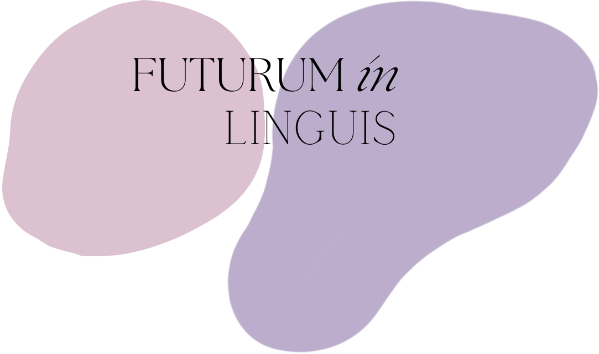

<div class="container">
    <div class="homepage_text">
        <p>
            Jesteśmy uczennicami 2 kl. III LO im. Mikołaja Kopernika w Kaliszu. Zdecydowałyśmy się na wzięcie udziału w ,,Zwolnionych z teorii", ponieważ chcemy podzielić się z Wami naszą pasją, zainteresowaniami oraz uświadomić o  tym, jak dużą rolę języki odgrywają w życiu każdego z Nas. <br>
            Zamierzamy przedstawić Wam wiele ciekawych pomysłów, a także sposobów na ułatwienie nauki. Ważna jest zmiana podejścia i znalezienie metody na łatwe i przyjemne przyswajanie wiedzy. Nauka języka nie musi pochłaniać naszego całego czasu, warto przeznaczyć go chociaż trochę i działać małymi krokami. <br>
            Włożymy wszelkie starania w rozwój naszego profilu i społeczności.
        </p>
    </div>
    
</div>

